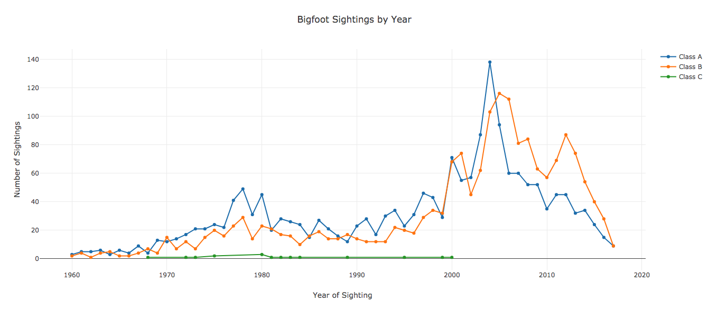

Advanced SVL
The basic SVL tutorial covered how to make, customize and arrange plots. SVL also has advanced SQL-powered data processing capabilities that make it easy to adjust your datasets without writing a bunch of additional code.
Before getting in to the SQL parts, there are a couple of things to cover first.
This tutorial uses the same dataset as the basic tutorial.
I'll go ahead and use the basic_tutorial.svl script from the basic SVL tutorial as a starting point.
cp basic_tutorial.svl advanced_tutorial.svl
Sorting Data
Suppose I want to see which states have the most bigfoot sightings. That's pretty easy. Add this underneath the line chart.
BAR bigfoot
TITLE "Bigfoot Sightings by State"
X state LABEL "State"
Y state COUNT LABEL "Number of Sightings"
It looks like this:

Notice that it's unsorted. SVL supports sorting an axis as a modifier.
BAR bigfoot
TITLE "Bigfoot Sightings by State"
X state LABEL "State"
Y state COUNT LABEL "Number of Sightings" SORT DESC
Now our bar chart looks like this:

SORT must be followed by ASC or DESC.
Here's the full script.
DATASETS
bigfoot "bigfoot_sightings.csv"
LINE bigfoot
TITLE "Bigfoot Sightings by Year"
X date BY YEAR LABEL "Year of Sighting"
Y number COUNT LABEL "Number of Sightings"
SPLIT BY classification
BAR bigfoot
TITLE "Bigfoot Sightings by State"
X state LABEL "State"
Y state COUNT LABEL "Number of Sightings" SORT DESC
CONCAT(
HISTOGRAM bigfoot
TITLE "Bigfoot Sighting Moon Phases"
X moon_phase LABEL "Moon Phase"
STEP 0.1
(
BAR bigfoot
TITLE "Number of Bigfoot Sightings by Classification"
X classification LABEL "Sighting Classification"
Y number COUNT LABEL "Number of Sightings"
PIE bigfoot
TITLE "Number of Bigfoot Sightings by Classification"
AXIS classification
HOLE 0.3
)
)
SCATTER bigfoot
TITLE "Bigfoot Sighting Temperature by Latitude"
X latitude LABEL "Latitude"
Y temperature_mid LABEL "Temperature (F)"
COLOR BY moon_phase "YlOrRd" LABEL "Moon Phase"


Interactive version here
Datasets at the Command Line
Sometimes it might be convenient not to have the name of the file hard coded into the SVL script.
For example, suppose you've got a pipeline that produces files with dates in the name.
It would be nice if you could create the same visualizations and treat the file as a parameter.
SVL supports passing in dataset file definitions from the command line.
In fact, the DATASETS declaration is optional.
-- No DATASETS!
LINE bigfoot
TITLE "Bigfoot Sightings by Year"
X date BY YEAR LABEL "Year of Sighting"
Y number COUNT LABEL "Number of Sightings"
SPLIT BY classification
BAR bigfoot
TITLE "Bigfoot Sightings by State"
X state LABEL "State"
Y state COUNT LABEL "Number of Sightings" SORT DESC
CONCAT(
HISTOGRAM bigfoot
TITLE "Bigfoot Sighting Moon Phases"
X moon_phase LABEL "Moon Phase"
STEP 0.1
(
BAR bigfoot
TITLE "Number of Bigfoot Sightings by Classification"
X classification LABEL "Sighting Classification"
Y number COUNT LABEL "Number of Sightings"
PIE bigfoot
TITLE "Number of Bigfoot Sightings by Classification"
AXIS classification
HOLE 0.3
)
)
SCATTER bigfoot
TITLE "Bigfoot Sighting Temperature by Latitude"
X latitude LABEL "Latitude"
Y temperature_mid LABEL "Temperature (F)"
COLOR BY moon_phase "YlOrRd" LABEL "Moon Phase"
is what our Bigfoot SVL script looks like without a DATASETS declaration.
It won't compile without one additional command line argument.
svl advanced_tutorial.svl --dataset bigfoot=bigfoot_sightings.csv
You can pass multiple files with different labels by repeating --dataset label=path for each file.
For simplicity I haven't changed this in the advanced_tutorial.svl script, I just wanted to demonstrate what it would look like.
Data in SVL
Before proceeding with the next few topics it's worth describing a tiny bit what's under the hood when it processes data. I'll leave the gory parts to this section, but a quick description of how SVL processes and retrieves data for plots will make the next few topics easier.
SVL's data processing is powered by SQLite.
After the source code is parsed and checked for syntax errors, SVL assembles the datasets in the DATASETS declaration plus any that were passed in via command line and loads them into an in-memory SQLite database.
For each plot, SVL constructs a SQL query to produce the data needed for the plot, executes it, and arranges it in a data structure that Plotly can understand.
Doing data processing using SQLite has a couple of big advantages.
- If most of the data work is in SQL, then there's nothing specific about the data being "in-memory" or SQLite itself. In the future this keeps open the possibility of supporting other databases.
- SVL can inject SQL directly into the data processing queries for the plots. This means SVL can support filters and transformations on the data without the need for tons of additional syntax - you can use what you already know.
The next three sections cover using FILTER to filter the data, using TRANSFORM to transform the data for an axis, and creating custom datasets within SVL by transforming the datasets that live in files.
All three of these use the underlying SQLite processor to do the heavy lifting.
Filtering Data
In the last tutorial I mentioned our line chart had some outliers that were causing the plot to look funny. Let's fix that by applying a filter to the data for that plot.
LINE bigfoot
TITLE "Bigfoot Sightings by Year"
X date BY YEAR LABEL "Year of Sighting"
Y number COUNT LABEL "Number of Sightings"
SPLIT BY classification
-- The filter string gets pasted into a SQL WHERE clause.
FILTER "date > '1960-01-01'"

🎉 Much better! 🎉
The most important thing to note about FILTER (and really all of SVL's SQL support) is that SVL has no idea what's in those quotes.
It literally pastes the stuff in quotes right into the query.
The field names of the dataset match the field names in the SQLite database.
Other than that - there are no rules, so use with caution.
I might have to rethink this when introducing remote data sources for security reasons, but for now it's only dangerous to you 😉.
Transforming Data
I have a confession to make - I like pie charts. The caveat is that I pretty much only like them for one thing: counting null values. As an engineer who has to send data-powered software into production environments, I count null values a lot. I want to rewrite our pie chart to count the number of null locations in the Bigfoot dataset.
Thankfully SVL doesn't support SQL just for filters.
It can also apply arbitrary SQL to transform an axis as well.
Replace the existing pie chart in the advanced_tutorial.svl script with this.
PIE bigfoot
TITLE "Number of Geocoded Sightings"
-- Yes line breaks do work.
AXIS TRANSFORM
"CASE WHEN latitude IS NULL THEN 'No Location'
ELSE 'Location' END"
HOLE 0.3

Just like with FILTER, everything in quotes after TRANSFORM literally gets pasted into a SQL query (this time it's a SELECT instead of WHERE).
SVL has no idea what's in those quotes, so keeping it simple is probably a good idea.
Also, TRANSFORM replaces a field specifier in an axis declaration.
It can apply to X, Y, AXIS, COLOR BY, and SPLIT BY.
Custom Datasets
When SVL loads each dataset into the SQLite database, it creates a table with the same name as the dataset.
Once all of the files have been loaded, SVL can actually create new tables from SQL queries on file-based datasets.
This is useful if you can't get what you want from FILTERs, TRANSFORMs, or any of SVL's built in aggregation functions.
Joining two files would be one example.
To illustrate, suppose I want to aggregate the number of sightings by classification separate from the bar chart (maybe I want this precomputed because I'm going to plot it a whole lot or something).
Then I'll need to construct a second dataset using SQL.
This is done in the DATASETS declaration with the SQL keyword.
DATASETS
bigfoot "bigfoot_sightings.csv"
-- Note the aggregation must be aliased so it's a valid SVL identifier.
bigfoot_class_counts SQL
"SELECT
classification,
COUNT(*) AS count
FROM bigfoot
GROUP BY classification"
The bar chart can now reference the new dataset.
BAR bigfoot_class_counts
TITLE "Number of Bigfoot Sightings by Classification"
X classification LABEL "Sighting Classification"
Y count LABEL "Number of Sightings"

The plot is the same as before.
All Together
In this section I've demonstrated the features of SVL that take advantage of the underlying SQLite-powered data processing. By allowing functions that can directly leverage SQL to be integrated with the language, SVL no longer has to provide a huge suite of data processing capability, and you the user do not have to learn yet another data processing language. SVL stays both small and flexible. Adding SQL commands does make things a little more complicated, but there will probably be cases where the tradeoff is worth it.
Here's the final advanced_tutorial.svl script with all of the modifications in this section.
DATASETS
bigfoot "bigfoot_sightings.csv"
-- Note the aggregation must be aliased to a valid SVL identifier.
bigfoot_class_counts SQL
"SELECT
classification,
COUNT(*) AS count
FROM bigfoot
GROUP BY classification"
LINE bigfoot
TITLE "Bigfoot Sightings by Year"
X date BY YEAR LABEL "Year of Sighting"
Y number COUNT LABEL "Number of Sightings"
SPLIT BY classification
-- The filter string gets pasted into a SQL WHERE clause.
FILTER "date > '1960-01-01'"
BAR bigfoot
TITLE "Bigfoot Sightings by State"
X state LABEL "State"
Y state COUNT LABEL "Number of Sightings" SORT DESC
CONCAT(
HISTOGRAM bigfoot
TITLE "Bigfoot Sighting Moon Phases"
X moon_phase LABEL "Moon Phase"
STEP 0.1
(
BAR bigfoot_class_counts
TITLE "Number of Bigfoot Sightings by Classification"
X classification LABEL "Sighting Classification"
Y count LABEL "Number of Sightings"
PIE bigfoot
TITLE "Number of Geocoded Sightings"
-- Yes line breaks do work.
AXIS TRANSFORM
"CASE WHEN latitude IS NULL THEN 'No Location'
ELSE 'Location' END"
HOLE 0.3
)
)
SCATTER bigfoot
TITLE "Bigfoot Sighting Temperature by Latitude"
X latitude LABEL "Latitude"
Y temperature_mid LABEL "Temperature (F)"
COLOR BY moon_phase "YlOrRd" LABEL "Moon Phase"
This script is just over 50 lines of very spread out code. The visualization looks like this.

Interactive version here.
This script demonstrates every syntax feature of the SVL language.
Conclusion
In addition to syntax for declaring datasets and creating / customizing charts, SVL also provides advanced data processing capability by exposing the underlying SQL processing engine directly. This provides an immense amount of flexibility for arranging the data in a way that best suits the charts without leaving SVL or adding a bunch of duplicate syntax.
At this point you know the whole language. The final script in this tutorial touched every part of the SVL grammar.
If you need a reference to the grammar, head on over to the language reference section. If you'd like to really know how SVL works from top to bottom, check out this article.
Thanks for taking the time to walk through the SVL language. I hope you find yourself using it to make and share lots and lots of plots.